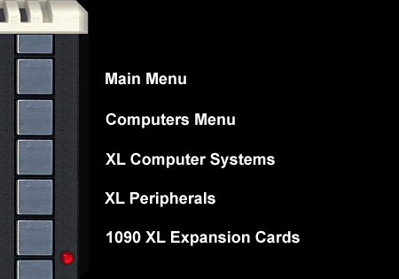
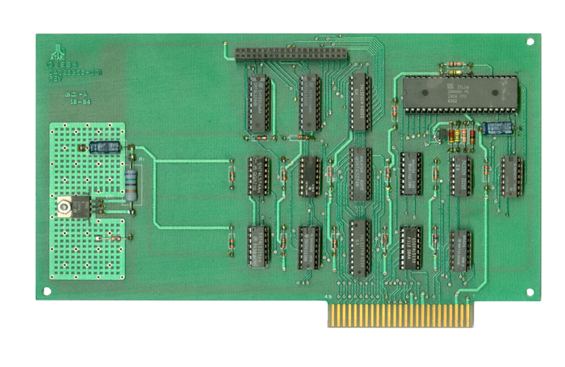
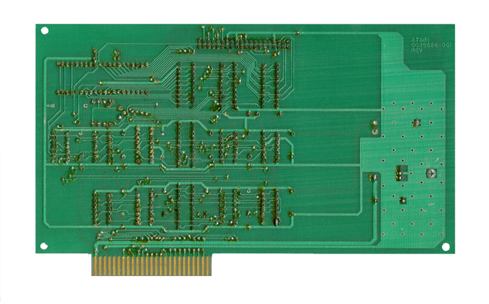

Z80 CP/M Card Schematic
Z80 CP/M Card Mechanicals
|
Atari 1090 XL
Expansion Cards
Atari 1090
Z-80 CP/M Board
(Atari 1066)

Z80 CP/M Board - Front

Atari 1090 CP/M
Module. (This was to be the 1090 version of the "Sweet-Pea" which was an
external box called the Atari 1060 CP/M Add-on. The 1090 CP/M card is the
Atari 1066.) This expansion card would have allowed an Atari computer to run
software written for Zilog Z-80 processor CP/M (Control Program for
Microcomputers) computers. The card contains a Zilog Z-80 processor and
support circuitry. However this board has not been able to be tested since no
software drivers have yet been found. The card does contain an expansion
header, it is unknown whether or not this header may have been used for a
daughter card with RAM or perhaps a floppy disk controller board or some other
feature.
Are you a former Atari engineer?
Did you work on the 1090 or have direct knowledge of this project?
Please contact the Atari Museum:
CLICK HERE
|
|
|

{kind=link}
{kind=link}